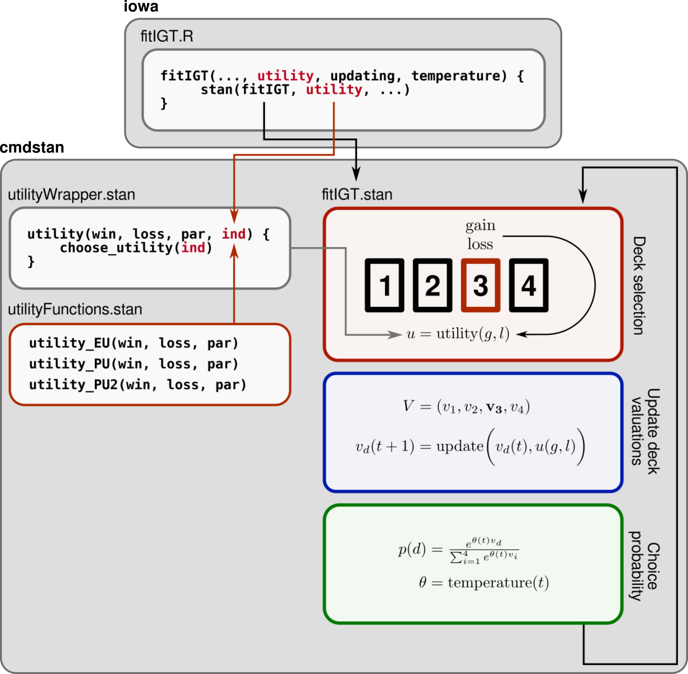

Adding new models
Corson N. Areshenkoff
2024-08-06
customizing_models.RmdAdding new model components (e.g. new utility functions) involves two broad steps:
- Making the component available to stan, which is responsible for all model simulation and fitting.
- Updating iowamodels’s internal information about the model component, including parameter names, bounds, etc.
Although the actual process of adding a new component is slightly tedious, the ultimate goal is that, once added, the new component can be used with all package functions (and combined with all other components) with a minimum of thought or fuss.
Internal package structure
The general structure of the package is as follows:
- External packages (such as iowa) interface with
iowamodels through wrapper functions such as
simulateIGT()andfitIGT(), which provide a high-level interface to the cmdstan models implemented in iowamodels. - Models are implemented in
src/stan/<modelfile>>.stan. - The actual component functions (e.g. the specific utility function)
are passed internally as data to the stan model, which are then imported
from a separate
.stanfile. These separate files are stored insrc/stan/include, with the names e.g.utilityFunctions.stanfunctions.
For example, src/stan/fitIGT.stan – which is responsible
for model fitting – specifies a general model as follows:
// Likelihood
for (t in 1:NUM_TRIALS){
// Compute temperature
theta = temperature(t, temperature_params, TEMPERATURE_FUNCTION);
// Draw card
choice[t] ~ categorical_logit(theta * V);
// Compute utility
U = utility(win[t], loss[t], utility_params, UTILITY_FUNCTION);
// Update deck values
V = updating(V, U, choice[t], updating_params, UPDATING_FUNCTION);
}On trial t, the utility of the outcome is evaluated
through the function
utility(win[t], loss[t], utility_params, UTILITY_FUNCTION);where utility is imported from
src/stan/include/utilityWrapper.stanfunctions, and is
defined by
real utility(real win, real loss, array[] real par, int ind){
if (ind == 1){
return utility_EU(win, loss, par);
} else if (ind == 2){
return utility_PU(win, loss, par);
} else if (ind == 3){
return utility_PU2(win, loss, par);
} else {
return 0;
}
}Note that this function is just a general wrapper that calls one of
several utility functions depending on the integer argument
ind. In turn, all utility functions are defined in
inst/stan/include/utilityFunctions.stan.
As an example, the EU and PU utility are defined by:
// EU utility function (used in EV model)
real utility_EU(real win, real loss, array[] real par) {
return (1-par[1]) * win - par[1] * loss;
}
// Prospect utility function
real utility_PU(real win, real loss, array[] real par) {
real net = win - loss;
if (net >= 0){
return pow(net, par[1]);
} else {
return -par[2] * pow(abs(net), par[1]);
}
}Note an important point: All utility functions have exactly
the same signature; that is
real win, real loss, array[] real par.
The package in turn contains a modelDetails object
contained in R/sysdata.rda. This structure is a nested list
containing information about each model component; such as its required
parameters, and any necessary (or default) bounds.
The structure of this list is as follows:
modelDetails
. utility
. . EU
. . . index = 1
. . . pars
. . . . w
. . . . . bounds = c(0,1)
. . . . . default_bounds = c(0, 1)
. . . . . description = "Win/loss weighting"
. . . . . index = 1
. . PU
. . . index = 2
. . . pars
. . . . A
. . . . . bounds = c(0, Inf)
. . . . . default_bounds = c(0, 1)
. . . . . description = "Concavity of utility function"
. . . . . index = 1
. . . . L
. . . . . bounds = c(0, Inf)
. . . . . default_bounds = c(0, 5)
. . . . . description = "Loss aversion"
. . . . . index = 2That is, it has fields utility, updating,
and temperature; each of which is a named list with fields
corresponding to each included function. The field index
indicates the corresponding value of ind in the stan
wrapper function (e.g. utility(..., ind = 1) chooses the EV
utility), while the index within each parameter field specifies the
position of each parameter in the par argument. The
parameter fields also contain entries giving parameter bounds (outside
of which the package will throw an error), as well as default bounds
used for model fitting if the user does not specify their own.
The general structure of the package program is illustrated below, using the utility function as an example:

Implementing a new model component
Adding a new utility function to iowamodels now involves the following steps:
- Add the function to
src/stan/include/utilityFunctions.stanfunctions, making sure that it matches the required signature. - Add a new
ifstatement tosrc/stan/include/utilityWrapper.stanfunctions, corresponding to the next highest value ofind. - Add a new field to
modelDetailsin theutilityfield – named with the unique keyword of the new utility function – and populate it with the necessary fields (i.e. one subfield for each parameter, each with the required fieldsboundsanddefault_bounds). The index field must correspond to the value ofindwhich calls the new utility function in step (2). - Resave
modelDetailstoR/sysdata.rdausingsave(modelDetails, file = 'R/sysdata.rda').
After the package is recompiled, the new utility function should be ready for use.
The steps for adding new updating or temperature functions are essentially identical, mutatis mutandis.